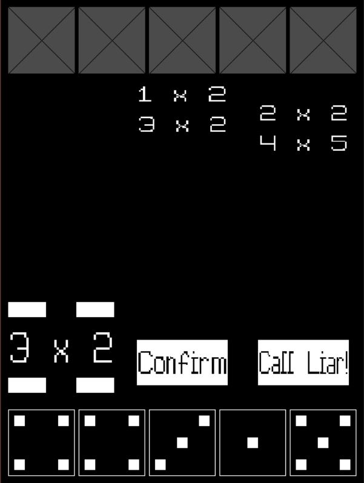
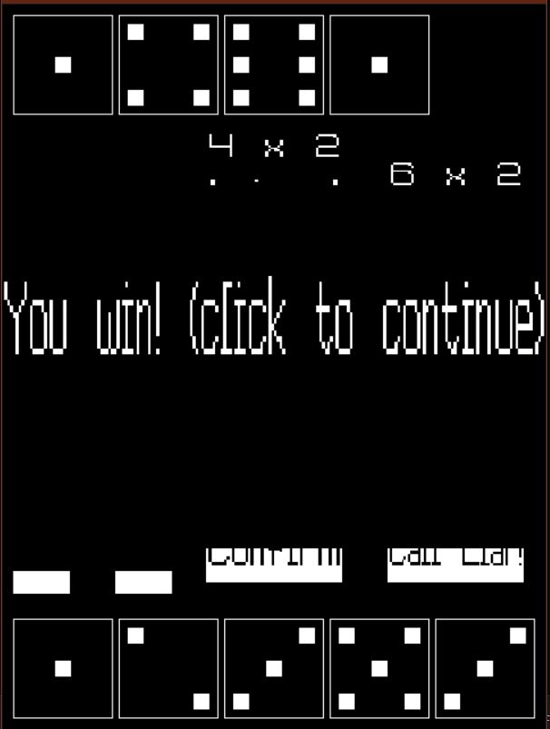

I will first explain the rules of Liar’s dice. It’s a game made popular by Pirates of the Caribbean and heavily involves game of bluffing. Each player has some amount of dices, and each player can only see their own dices. Players take turns bidding on how many of some dice value there is. Player can only call a bid that has a higher bid count or same bid count with higher dice value.
Players can also call the previous player a liar. When this happens all the dices are revealed, and the dice total is counted. If the previous players bid was a lie, then the player calling the liar wins and gets to remove one die. The winner is the player who has no dices left. A extra rule that I have also implemented is that one’s are wild and count towards every die.
Liar’s dice is a game I have been interested in for a long time and this Metropolia course project was a perfect opportunity to make an AI for it. My favourite project ever was the chess AI that was created in Metropolia’s data structures and algorithms course and this game kind of reminded me of that. Obviously, Liar’s dice is much simpler game than chess but calculating odds for an AI in game where there is a lot of hidden information is hard to get right.
The first thing I had to figure out when creating an AI for Liar’s dice was to find an algorithm that calculates the odds for bids made by the player. After doing some research the best function for the job was to use binominal distribution:
The binomial distribution function describes the probability of having exactly k successes in n independent trials, where each trial has a constant probability of success p. In the context of Liar’s Dice this gives estimate on how likely the previous bid was true.
And this is where making the AI became hard because the AI needs to lie and somehow figure out if the player is likely to lie. I used various ways to simulate this, and it could be refined but overall, it plays okay.
The next step after creating the AI was to make the display. I used SDL library for graphics and SDL_ttf for displaying text. This wasn’t anything hard but designing a good interface is not my speciality. The most interesting portion of displaying the game was to figure out a was to display the die and making the class for it.
Overall, this project was a lot of fun and made me love C++ event more!
